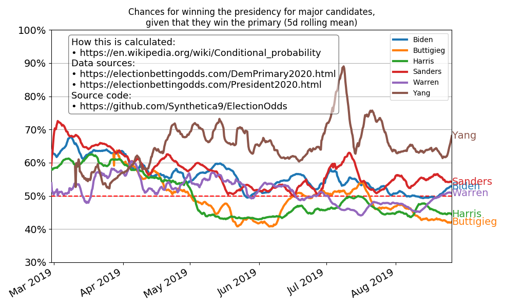

Out of all the democratic candidates, Andrew Yang has the best chance to beat Donald Trump.
The graph below comparing the different candidates' odds is generated from betting market odds.
Why use betting markets over polls?
If you'd like to know more, you can check out this research paper that compares prediction markets with polls.
"Andrew Yang is polling at 2-3%. He couldn't possibly win." Or could he?
Stranger things have happened. Let's look at some polling history, shall we?
In the 1st half of 1975, Jimmy Carter was in 16th place out of 18 candidates. His polling number? A whopping 0.8%
In the 2nd half of 1975, Jimmy Carter moved up to 13th place.. out of 13 remaining candidates.
Oh, and his polling number had actually dropped to 0.5%
In 1976, Jimmy Carter won the primary with 40% of the vote
In the 1st half of 1991, Bill Clinton was tied for 11th place out of 18 candidates. He polled at 1.3%
In the 2nd half of 1991, Bill Clinton's polling improved dramatically to 7.4%, putting him in 4th place
July 11, 2015, Donald Trump was in 7th place in the Republican primaries, polling at 6.5%
In just a week, Trump leapt into 1st place